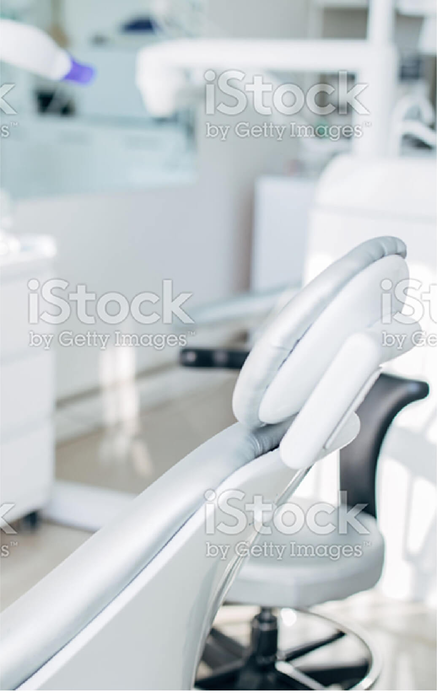
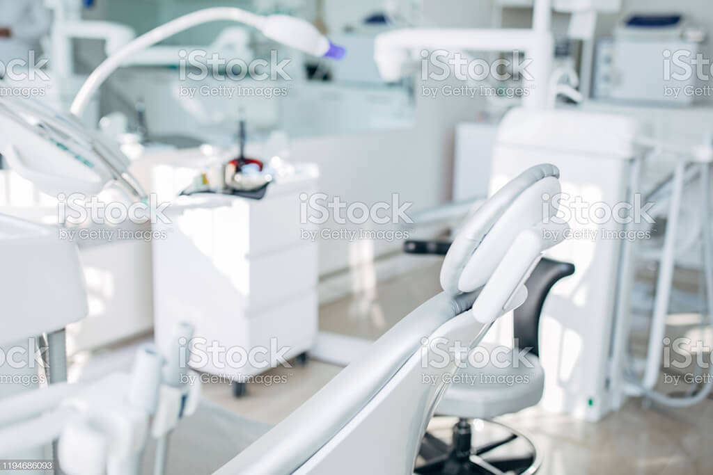
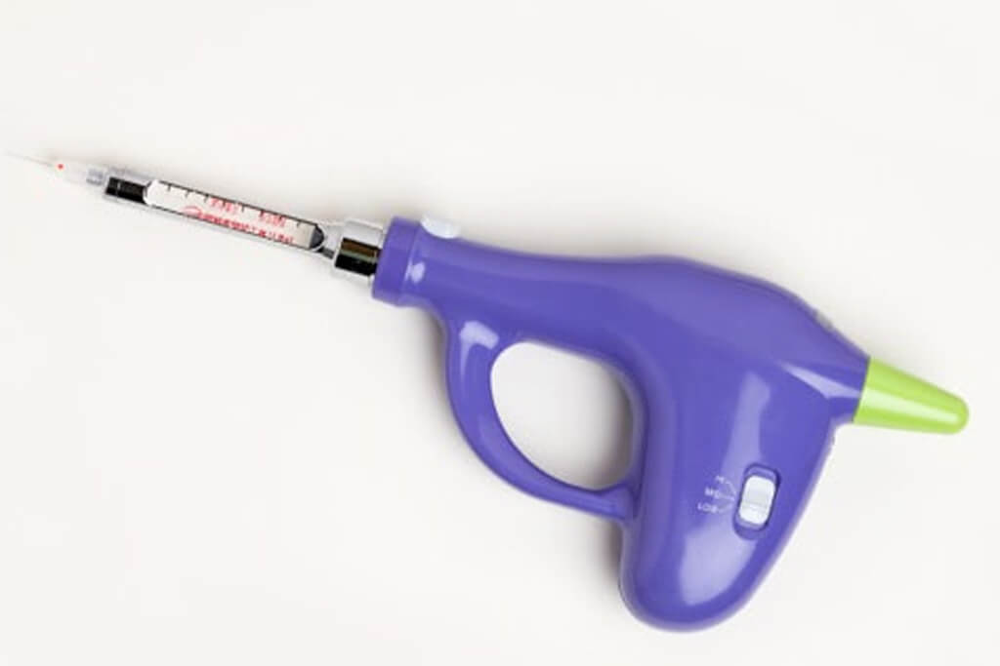
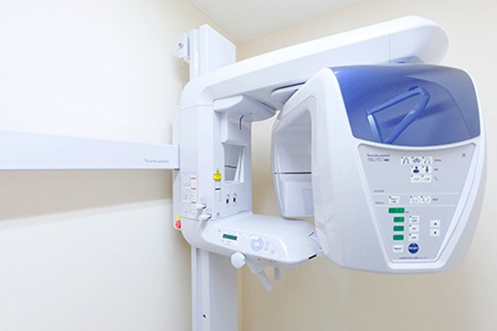
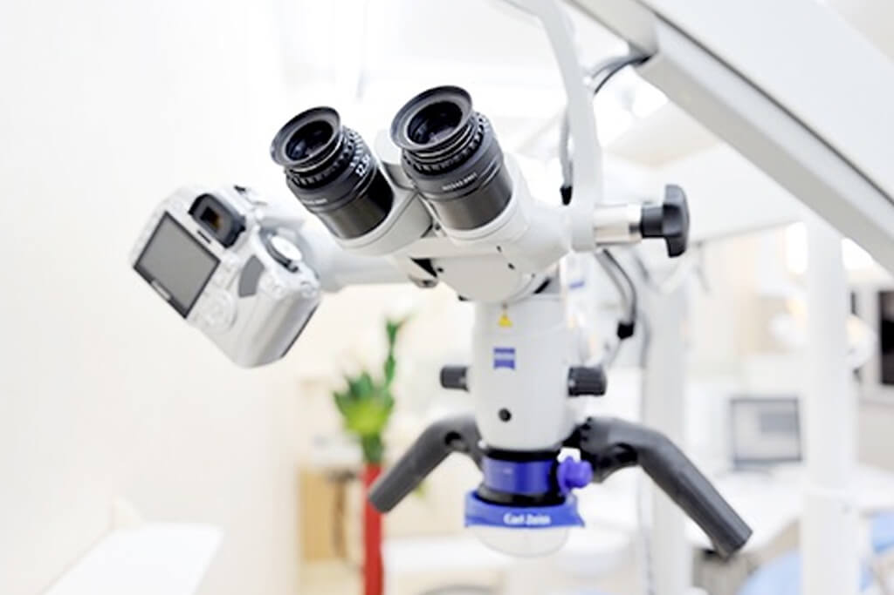
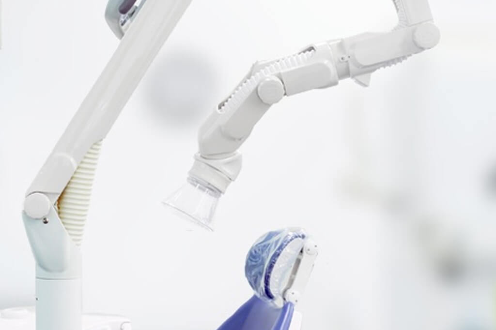
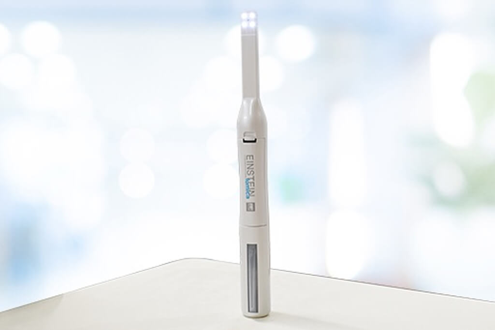
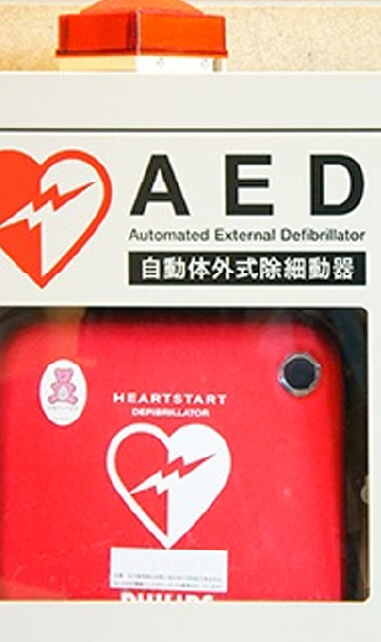
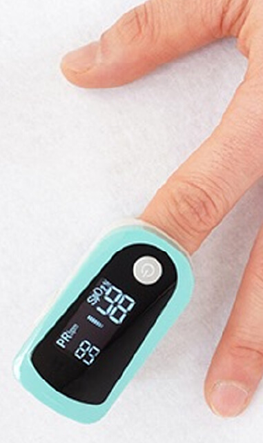
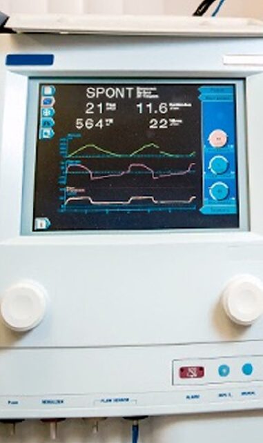

CLINIC
院内・設備
外来環
歯科外来診療環境体制

外来環(歯科外来診療環境体制)は、厚生労働省が定めた医療機関の基準のことです。
「院内感染を防ぐために、器具の滅菌などの衛生管理を徹底している」「緊急時に応急処置ができる装置を備えている」などの厳しい基準がありますが、当院はそのすべてをクリアしております。
「院内感染を防ぐために、器具の滅菌などの衛生管理を徹底している」「緊急時に応急処置ができる装置を備えている」などの厳しい基準がありますが、当院はそのすべてをクリアしております。
外来環
テキストテキストテキストテキストテキストテキストテキストテキストテキストテキストテキストテキストテキストテキストテキストテキストテキストテキストテキストテキストテキストテキストテキストテキストテキストテキストテキストテキストテキストテキストテキストテキストテキストテキストテキストテキスト
設備紹介
FACILITIES
滅菌器
それぞれの器具に適した滅菌器を使い分けることによって、器具についたウイルスや細菌を死滅させることができます。 お口に入る器具はすべてこの滅菌器で滅菌した清潔なものを使い、患者さんごと・使用ごとに取り換え、院内感染防止に努めています。

電動麻酔器
電動麻酔器を用いることで、コンピューター制御で麻酔液を一定の圧力でゆっくりと注入でき、痛みを軽減することができます。

デジタルレントゲン
歯科用CTは3Dの立体映像でお口の中を撮影できます。
歯、神経、血管の位置、顎の骨の厚みなどを鮮明に映し出せるため、平面的なレントゲンよりも精密な診査・診断を行うことができます。
歯、神経、血管の位置、顎の骨の厚みなどを鮮明に映し出せるため、平面的なレントゲンよりも精密な診査・診断を行うことができます。

マイクロスコープ
国内ではまだ導入率の低い、歯科用顕微鏡「マイクロスコープ」を導入しています。

口腔外バキューム
治療中に飛び散った唾液や、歯や詰め物・かぶせ物などの修復物を削った粉塵を瞬時に吸い込む機械です。

口腔内カメラ
患者さんに、歯やお口の中の状態をリアルタイムでくわしく伝えられるよう、口腔内カメラを導入しています。
Emergency response equipment
緊急対応設備

AED
AEDは、不整脈による心停止の際に、心臓に電気ショックを与えて正常なリズムに戻すための医療機器です。
パルスオキシメーター
指にはめるだけで、動脈の血中酸素飽和度と脈拍数が測定できる医療機器です。


生体モニター
全身状態を把握しながら、急な体調の変化にいち早く対応できるよう備えています。

ビスカクリニック
〒160-0022
東京都新宿区新宿6丁目24-20
| 診療時間 | 月 | 火 | 水 | 木 | 金 | 土 | 日 | 祝 |
|---|---|---|---|---|---|---|---|---|
| 09:30～13:00 | ● | ● | ● | ／ | ● | ● | ／ | ／ |
| 14:00～19:00 | ● | ● | ● | ／ | ● | ★ | ／ | ／ |
休診日：木曜・日曜・祝日 ★：14:00-17:00
待ち時間の軽減のため、
予約優先で診療を行っております
インターネットでご予約（24時間受付）